GDD completo
Os dez capítulos de docs/gdd/ numa página, com o texto como está no Markdown. Cada capítulo abre com seu cabeçalho (dono, status, data, fonte) e fecha com as perguntas em aberto. O resumo de uma página está em gdd.html.
Capítulos
mecânica → dinâmica → estética → produção01Visão geral
Fonte: GDD v0.1 (PDF) §1, §2 e §17 · docs/gdd/01-visao-geral.md
O que o jogo é, qual é a fantasia do jogador, os pilares que orientam cada decisão e o formato do protótipo.
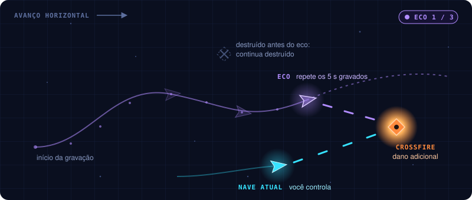
High concept
Um shooter de nave em que o jogador grava e reproduz suas próprias ações passadas para lutar ao mesmo tempo com versões anteriores de si mesmo, desviar dos ataques e explorar combinações temporais para derrotar chefes.
O tema central é One More Time: cada tentativa deixa para trás ações que podem ser reproduzidas para criar novas estratégias.
O jogo se chama Bilu's Invasion. One More Time foi o nome inicial e ficou como o tema do design; o código mantém o nome OneMoreTime nos namespaces e nos menus do Editor.
| Pilar de design | Cada tentativa deve ensinar algo e criar uma nova possibilidade |
|---|---|
| Fantasia do jogador | Ser um piloto preso num ciclo temporal que transforma cada movimento, esquiva e disparo em parte de uma estratégia maior |
| Premissa de câmera | Side-scrolling 2.5D: mundo 3D visto por uma câmera lateral que lê como 2D; a nave avança na horizontal — referência: as fases de avião de Cuphead |
Por quê: o jogador não fica mais forte por ter mais vida ou dano. Ele fica mais forte porque aprende a coordenar suas ações com as versões anteriores da nave.
Pilares de experiência
As ações gravadas viram ecos que repetem trajetórias, tiros e gadgets.
Dominar o movimento, ler padrões de ataque e criar boas trajetórias.
Inimigos e chefes vencidos por sincronização e posicionamento, não só por dano bruto.
Formato e escopo
| Gênero | Shooter side-scrolling 2.5D com padrões de bullet hell |
|---|---|
| Câmera | Lateral, com avanço horizontal; leitura 2D sobre um mundo 3D |
| Plataforma-alvo | PC |
| Motor | Unity 6 (6000.3.25f1), URP 17.3 e Input System 1.20 |
| Visual | Mundo e jogabilidade em 3D; parte dos elementos serão sprites 2D → 08 |
| Modo | Single-player |
| Estrutura | Runs curtas com encontros de combate e chefe → 06 |
| Duração-alvo da run | 5–10 minutos no protótipo completo |
| Duração de uma gravação | 5 segundos → 02 |
| Ecos simultâneos | Até 3 no protótipo |
| Conteúdo inicial | Uma arena, ondas de inimigos e um chefe (sem armadilhas nem puzzles) |
| Controles | Teclado e mouse, ou controle (gamepad); as teclas e botões podem ser trocados → 07 |
| Contexto | Protótipo para game jam |
Os números são parâmetros iniciais de design para testar, não valores definitivos.
Resumo executivo
O diferencial é transformar o próprio histórico do jogador em ferramenta de gameplay. Uma esquiva pode virar distração, um disparo pode preparar um ataque posterior e um gadget pode abrir uma rota que seria impossível atravessar sozinho.
Observar o eco executando exatamente o que foi gravado.
Usar a nave atual e o eco para atacar e desviar.
Perceber uma solução temporal para um desafio que parecia impossível.
- Quem é dono de cada capítulo deste GDD? Hoje todos estão como _TBD_.
- Público-alvo: não está escrito no GDD v0.1.
- O GDD v0.1 descrevia o jogo como 2D; a correção para 2.5D vem do dono do projeto, e outros trechos do v0.1 ainda podem assumir 2D. → 09
02Loop e eco temporal
Fonte: GDD v0.1 (PDF) §3 e §4; protótipo em Assets/_Project (EchoRecorder, EchoAbility, EchoGhost) · docs/gdd/02-eco-temporal.md
O loop central do jogo e o sistema que o sustenta: o que é gravado, como o eco nasce e as regras que o mantêm previsível.
Core gameplay loop
O jogo gira em torno de aprender os padrões, gravar ações úteis e usá-las para criar oportunidades de ataque.
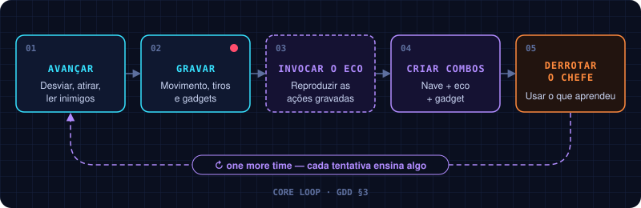
O que o jogador grava
O sistema registra uma sequência de ações da nave numa janela de cinco segundos.
| Dado | Comportamento |
|---|---|
| Posição | A posição da nave ao longo do tempo |
| Mira e inclinação | A direção apontada pelo mouse e a inclinação visual da nave |
| Disparos | Instante, tipo e direção de cada tiro |
| Gadgets | Momento e direção de uso |
| Duração | 5 segundos por gravação |
| Reprodução | Uma cópia independente repete a sequência |
| Limite | Até 3 ecos ativos no protótipo |
A gravação não é um replay de vídeo: é uma lista de dados que permite reproduzir os eventos da nave → 09.
Ciclo de gravação
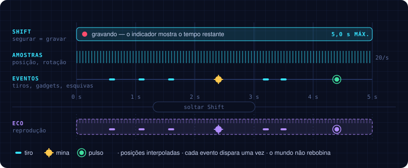
- O jogador segura Shift: a gravação começa.
- O jogo armazena até 5 segundos de movimento e eventos.
- Ao soltar, a sequência fica pronta.
- O jogador aperta E para invocar o eco.
- O eco é uma nave fantasma que começa no ponto inicial gravado e executa a sequência na mesma ordem.
- Depois da reprodução o eco desaparece — a menos que uma habilidade permita mantê-lo ativo.
Durante a reprodução o jogador continua controlando a nave atual e pode gravar uma nova sequência. A gravação tem um indicador visual de tempo restante, para o jogador planejar sem olhar o tempo todo para a interface → 07.
Regra fundamental
Por quê: evita a complexidade de rebobinar a simulação inteira e torna o sistema mais previsível.
Limites e consistência
| O eco… | Regra |
|---|---|
| Decide? | Não. Não toma decisões nem corrige a trajetória |
| Persegue inimigos? | Não. A reprodução não muda de direção |
| Atira para onde? | Para a direção registrada |
| Colide com a nave atual? | Não |
| Recebe dano? | Não, de projéteis comuns (no protótipo) |
| Usa gadgets? | Sim, e obedece às regras de cada gadget |
| Quantos ao mesmo tempo? | Limitado, para a tela não ficar ilegível |
No protótipo atual
| Regra | Como está implementado |
|---|---|
| Espaço da gravação | Posições relativas à tela (o playfield que rola), não ao mundo: o eco refaz o mesmo trajeto na tela mesmo com a câmera avançando |
| Uma gravação por eco | Invocar consome a gravação; para outro eco, grave de novo (EchoConfig.consumeRecordingOnInvoke, ligado) |
| Limite de 5 s | A gravação para sozinha em 5 s; para começar outra é preciso soltar Shift |
| Ecos ao mesmo tempo | Até 3 (EchoConfig.maxActiveEchoes) |
| Corpo do eco | Sem colisor e sem vida: não bloqueia a nave nem recebe dano |
| Entrada e saída | O eco aparece e some com um fade de 0,2 s |
| Mira | A direção é amostrada junto da pose; o eco gira para a mira gravada e cada tiro usa sua direção registrada |
| Gadget | O uso da mina temporal entra na gravação (EchoEventType.Gadget); o eco solta a mina no mesmo ponto e instante → 05 |
Por quê: num side-scroller a tela anda o tempo todo; gravar em coordenadas do mundo deixaria o eco para trás, fora da tela, poucos segundos depois.
- O eco recebe dano de projéteis especiais ou do chefe? O v0.1 só diz "comuns, no protótipo".
- Ecos simultâneos no MVP: §2 fala em até 3, mas o MVP (§14) põe "até três ecos" como opcional. O protótipo já suporta 3. → 10
- Manter a gravação consumida a cada invocação, ou permitir reinvocar a mesma gravação?
03Combate
Fonte: GDD v0.1 (PDF) §5.1–5.4; protótipo em Assets/_Project (prefabs PlayerShip, Enemy_S, Enemy_M; ComboTracker, CrossfireRule, SynchronizedStrikeRule) · docs/gdd/03-combate.md
O que a nave do jogador faz, os tipos de dano, os combos temporais e o que a pontuação premia.
Nave do jogador
- Movimento em oito direções dentro da área jogável, independente da mira.
- Mira livre com o mouse: a nave aponta para o cursor e mostra uma linha curta com retículo na direção do tiro.
- Disparo principal contínuo na direção da mira.
- Um gadget equipado → 05.
- A habilidade de gravação e reprodução temporal → 02.
- Vida limitada e invulnerabilidade breve depois de receber dano.
O jogador atira enquanto se move. O foco é esquivar e se posicionar, não alternar o tempo todo entre movimento e ataque.
A rotação acontece apenas no filho visual: o collider e o movimento continuam alinhados ao plano de jogo. O tiro usa a direção exata do cursor; a suavização curta afeta somente a apresentação da nave, para não adicionar atraso à resposta do disparo.
Cada tiro confirma a ação em quatro camadas curtas: o retículo pulsa e avança, o pivô visual recua sem mover a hitbox, o canhão solta um flash ciano reutilizável e o Feel aplica squash-and-stretch na nave. O retículo tem uma respiração discreta e segue a direção com suavização visual, mas a trajetória continua usando a mira exata. O eco repete a rotação gravada, o recoil e o flash para preservar a leitura temporal.
Acertos aceitos piscam rapidamente o alvo e soltam faíscas na cor da origem: ciano para a nave e violeta para o eco. Escudos respondem com uma deflexão azul mesmo quando bloqueiam todo o dano. A destruição deixa uma explosão e um anel expansivo depois que o objeto sai da cena; inimigos resistentes, geradores, núcleo e nave usam escalas progressivamente maiores. A câmera recebe impulsos curtos e limitados por importância: quase imperceptíveis no tiro comum, claros ao sofrer dano e fortes só em destruições relevantes.
Valores de partida no protótipo
| Item | Valor | Onde mudar |
|---|---|---|
| Integridade da nave | 3 | PlayerShip → Health |
| Invulnerabilidade após dano | 1,2 s | PlayerShip → Health |
| Velocidade da nave | 9 u/s | PlayerShip → ShipMotor |
| Disparo principal | 10 tiros/s, dano 1; segue a mira livre, com pulso do retículo, recoil, flash e squash | PlayerShip → ShipWeapon, ShipAim, ShipFireFeedback, Shot_Ship |
| Hitbox da nave | caixa de 1,4 × 0,9 u no plano de jogo, em volta do disco e da cabine; menor que a arte (aletas, ponta da cúpula e canhões ficam de fora) | PlayerShip → BoxCollider |
| Caça (S) | 1 de vida, 100 pontos; 1 tiro mirado | Enemy_S → 04 |
| Artilheiro (M) | 20 de vida, 300 pontos; leques de 3 tiros | Enemy_M → 04 |
| Inimigo que bate na nave | 1 de dano | ContactDamage |
| Mina temporal | 4 de dano de gadget num raio de 2,4 u; recarga de 1,5 s | TimeMine_Ship, TimeMine_Echo, PlayerShip → ShipGadget |
| Tiros inimigos (caça, interceptador, artilheiro, Guardião) | 1 de dano, 9,5 u/s | Shot_Enemy |
| Guardião | núcleo 120 de vida, geradores 12 | Guardian → 06 |
| Crossfire | janela de 1 s entre o acerto da nave e o do eco; +3 de dano combinado; o mesmo alvo só dá outro Crossfire depois de 1 s | ComboTracker (cena, em Systems) |
| Synchronized Strike | janela de 2,5 s entre a queda dos dois geradores | ComboTracker |
Valores para testar, não definitivos.
Tipos de dano
| Tipo | Origem |
|---|---|
| Direto | Tiros convencionais da nave |
| De gadget | Minas, pulsos ou ataques especiais |
| Combinado | Efeitos especiais ativados quando as ações da nave atual e do eco coincidem |
O código também marca o dano de contato (um inimigo que bate na nave), que o GDD v0.1 não lista. O protótipo separa os tiros da nave dos tiros do eco (ShotSource), e é isso que os combos usam. O dano de gadget é o da mina temporal → 05. O dano combinado é o bônus do Crossfire.
Combos temporais
Os combos são eventos específicos que o jogo reconhece, não multiplicadores genéricos.
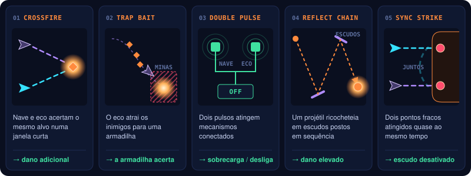
| Combo | Condição | Resultado |
|---|---|---|
| Crossfire | Nave atual e eco acertam o mesmo alvo numa janela curta | Dano adicional |
| Reflect Chain | Um projétil ricocheteia em escudos posicionados em sequência | Dano elevado ao alvo |
| Synchronized Strike | Dois pontos fracos são atingidos quase ao mesmo tempo | Escudo do chefe desativado |
Trap Bait (o eco atrai inimigos para uma armadilha) e Double Pulse (dois pulsos em mecanismos conectados) saíram junto com as armadilhas e os mecanismos do cenário.
Cada combo tem feedback visual e sonoro próprio → 08.
Por quê: o jogador precisa entender por que a combinação funcionou — é assim que ele aprende a repeti-la.
No protótipo atual
Dois dos três combos existem: Crossfire e Synchronized Strike. Os dois partem de acertos reais da nave e do eco: um tiro ou uma mina conta para quem o disparou, a nave atual ou um eco.
| Combo | Como o jogo reconhece | Resultado |
|---|---|---|
| Crossfire | A nave e um eco acertam o mesmo alvo (inimigo, gerador ou núcleo do Guardião) com até 1 s de diferença. Dois acertos da mesma fonte não contam. Cada par de acertos dá um combo só, e o mesmo alvo só dá outro depois de 1 s | +3 de dano combinado no alvo, se ele ainda estiver vivo, e 100 pontos |
| Synchronized Strike | Os dois geradores do Guardião caem com até 2,5 s de diferença, um derrubado pela nave e o outro por um eco, e o núcleo fica vulnerável | O escudo do núcleo cai, pela regra do próprio Guardião → 06, e 1000 pontos |
Os dois ficam no ComboTracker; as regras, em CrossfireRule e SynchronizedStrikeRule (Core, com testes). Além do aviso no HUD → 07, ambos acionam Convergência Temporal no ponto do combo: faíscas violetas, dois pulsos expansivos ciano/violeta e um impulso curto de câmera. Cada combo toca um efeito sonoro curto próprio → 08.
Os tamanhos das janelas são valores de partida, generosos de propósito (o §16 pede janelas de sincronização generosas no começo): 1 s para o Crossfire; 2,5 s para o Synchronized Strike, o mesmo da janela curta da fase 3 do Guardião. Falta validar jogando.
Por quê: derrubar os geradores sem o eco ainda abre o núcleo, se o jogador for rápido o bastante (pergunta em aberto em 06). O Synchronized Strike não muda essa regra: ele reconhece e premia quando a abertura veio da nave e do eco juntos.
Pontuação por habilidade
- Combos temporais.
- Sequências sem sofrer dano.
- Sincronizações precisas.
A pontuação não é necessária para terminar a fase. Ela incentiva o domínio da mecânica e a rejogabilidade.
No protótipo atual a pontuação é 100 por inimigo abatido, 250 por gerador do Guardião, 5000 pelo núcleo, 100 por Crossfire e 1000 por Synchronized Strike, como placeholder. Dos prêmios acima, só os combos temporais existem. A tela de vitória mostra quantos combos o jogador fez.
- Valores de vida, dano e invulnerabilidade: os de partida estão na tabela acima; falta validar jogando.
- O dano de contato entra como quarta categoria, ou é parte do dano direto?
- Combos temporais: Crossfire e Synchronized Strike implementados; falta Reflect Chain, que depende do escudo refletor (expansão). Trap Bait e Double Pulse saíram com as armadilhas.
- Tamanho da "janela curta" de Crossfire e Synchronized Strike: o protótipo usa 1 s e 2,5 s como valores de partida (§16 pede janelas generosas no começo). Falta validar jogando.
- Crossfire: o bônus (+3 de dano combinado) e o intervalo de 1 s antes de o mesmo alvo dar outro combo são valores de partida, não vêm do v0.1.
- Synchronized Strike: deve ser a única forma de abrir o núcleo (o que responderia à pergunta dos geradores sem regeneração em 06), ou continua só reconhecendo e premiando a abertura feita com o eco?
- Hitbox da nave menor que a arte, como é comum em shmups: confirmar o tamanho jogando.
- Feedback próprio de cada combo: o protótipo só tem o aviso no HUD; faltam o som exclusivo e um efeito no mundo → 08.
04Inimigos e ondas
Fonte: GDD v0.1 (PDF) §5.5; protótipo em Assets/_Project (Enemy_S, Enemy_W, Enemy_M, Enemy, EnemyGun, ModelVariants, SwoopMotion, SerpentineMotion, HoverMotion, FireCycle; Data/Waves/Encounter01_PrimeiroCiclo.asset) · docs/gdd/04-inimigos-e-ondas.md
Quem a nave enfrenta, como cada inimigo conversa com o eco, e como as ondas entram na tela.
Os inimigos surgem durante o avanço da fase, entrando pela direita (e às vezes por cima ou por baixo). Em vez de spawn aleatório, cada encontro segue uma lista de ondas com tempo e posição definidos.
Por quê: o jogador aprende o padrão e consegue planejar o que gravar no eco.
Tipos de inimigo
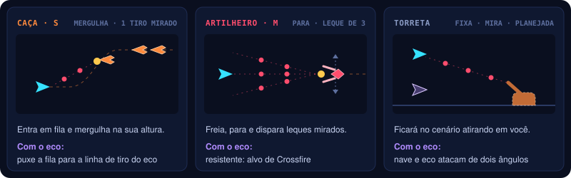
| Inimigo | Comportamento | Papel com o eco |
|---|---|---|
| Caça (S, pequeno) | Entra em fila pela direita, em linha reta. Num ponto da tela mergulha para a altura em que a nave está naquele momento, avisa com um brilho e dispara um tiro mirado; depois segue e sai pela esquerda | Como mergulha atrás da nave, dá para puxar a fila para a linha de tiro do eco |
| Interceptador (W, pequeno) | Cruza a arena numa senoide, alternando a altura dos membros da formação. Atira rajadas de 2 tiros enquanto atravessa | Fecha corredores retos e obriga a nave a reposicionar a mira; o eco consegue cobrir a faixa oposta |
| Artilheiro (M, médio) | Entra, freia e segura uma posição à direita, oscilando de forma ampla. A cada rajada avisa com um brilho e dispara um leque de 5 tiros mirados; depois de um tempo acelera e sai pela esquerda | Resistente e móvel: alvo natural de Crossfire enquanto sustenta pressão na tela |
| Torreta (planejada) | Parada no cenário, atira na direção da nave | Exige que nave e eco ataquem de posições diferentes |
O GDD v0.1 previa um drone (linha reta, sem atirar) e um ondulante (zigue-zague em grupos). Em 2026-10-18 o time pediu inimigos melhores e depois uma curva mais frenética. O caça substituiu o drone; o interceptador recuperou o papel ondulante com tiro; e o artilheiro cria pressão persistente, todos com os modelos de blockout do designer → 08.
Cada família visual tem três variações de modelo, e cada inimigo sorteia uma ao surgir. Caça e interceptador compartilham a família pequena. A variação muda só o visual: caminho, tiro, vida e pontos são os do tipo, e as ondas continuam por script. A hitbox e o ponto de onde sai o tiro acompanham o modelo sorteado.
Por quê: uma fila de caças iguais parece um carimbo; com peças e cabeças diferentes, a onda parece um esquadrão, sem mudar o que o jogador aprende sobre cada tipo.
Para a jam, a recomendação do v0.1 era começar com um tipo e adicionar os outros só se o núcleo já estivesse divertido; o protótipo tem três.
Por quê: os três cobrem pressões complementares: o caça investe contra a linha atual da nave, o interceptador ocupa alturas em movimento e o artilheiro sustenta projéteis enquanto os outros cruzam a tela.
Valores de partida no protótipo
| Caça (S) | Interceptador (W) | Artilheiro (M) | Onde mudar | |
|---|---|---|---|---|
| Vida | 2 | 3 | 18 | prefab → Health |
| Pontos | 100 | 150 | 300 | prefab → Enemy |
| Modelo | sorteado entre 3 variações pequenas | sorteado entre as mesmas 3 variações pequenas | sorteado entre 3 variações médias | prefab → ModelVariants |
| Movimento | 7,2 u/s; mergulha a 30% da meia largura à direita do centro, em 0,75 s, no máximo 5 u para cima ou para baixo | 5,8 u/s; senoide com deslocamento vertical máximo de 1,4 u a 0,55 Hz; cada membro recebe uma fase diferente | entra em 1,25 s até 4,5 u da borda direita; segura 6,5 s oscilando 0,8 u (0,45 Hz); sai acelerando a 6 u/s² | prefab → Enemy |
| Tiro | 1 tiro mirado, 0,28 s depois do início do mergulho | rajada de 2 tiros, 0,12 s entre eles e 8° de abertura; primeira em 0,55 s, depois a cada 1,35 s | leque de 5 tiros mirados, 10° entre eles; primeira rajada 0,65 s depois de parar, depois a cada 1,45 s | prefab → EnemyGun |
| Aviso antes do tiro | 0,28 s | 0,35 s | 0,4 s | prefab → EnemyGun |
| Tiro inimigo | 9,5 u/s, 1 de dano (o mesmo do Guardião) | Shot_Enemy | ||
| Encostar na nave | 1 de dano | 1 de dano | 1 de dano | ContactDamage |
Valores para testar, não definitivos. As regras dos caminhos e do tiro ficam no Core (SwoopMotion, SerpentineMotion, HoverMotion, FireCycle), com testes.
Regras de surgimento
- As ondas são definidas por script: tempo de entrada, ponto de entrada, tipo e quantidade.
- Cada onda sinaliza a entrada com um aviso visual curto (no protótipo, um marcador piscando na borda direita, 0,9 s antes).
- Cada rajada inimiga é avisada: um brilho amarelo pisca na ponta do inimigo antes do tiro.
- Inimigo só atira com a ponta dentro da tela: nada atira de onde o jogador não vê.
- Inimigos que saem pela esquerda são removidos sem penalidade.
- A composição autoral controla a densidade: as sobreposições mais fortes combinam no máximo dois papéis de pressão por vez. Um limite técnico rígido ainda é futuro.
- Matar inimigos nunca é obrigatório para avançar; o scroll continua.
Dois artilheiros na mesma onda ficam em alturas diferentes (duas fileiras); se a onda tiver mais de um na mesma fileira, cada um para mais à direita que o anterior, mantendo a distância com que entrou.
Exemplo — Encontro 1 (primeiro ciclo)
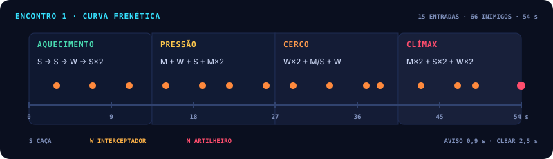
| Tempo | Onda | Objetivo de design |
|---|---|---|
0:00–0:15 | Caças no alto (0:03), embaixo (0:07), interceptadores (0:11) e primeiro cerco em dois níveis (0:15) | Entrar em ação rápido e ensinar os três vetores de movimento sem misturá-los de imediato |
0:19–0:29 | Primeiro artilheiro (0:19), interceptadores por baixo (0:22), caças no alto (0:26) e dupla de artilheiros (0:29) | Começar a sobrepor alvo resistente com ameaça móvel; criar alvos para Crossfire |
0:33–0:43 | Tesoura de interceptadores (0:33), artilheiro de contenção (0:37), escolta sobreposta (0:38,5) e parede móvel (0:43) | Cobrar leitura de prioridade, mudança de altura e uso do eco para cobrir outra faixa |
0:47–0:54 | Artilheiros em pinça (0:47), caças em duas linhas (0:49) e clímax de interceptadores em duas linhas (0:54) | Pico de densidade antes do Guardião, sem remover os avisos de entrada e de rajada |
Está em Encounter01_PrimeiroCiclo.asset: 15 entradas e 66 inimigos em 54 s (antes eram 9 entradas e 35 inimigos em 73 s). O encontro termina 2,5 s depois da última onda, quando não resta inimigo vivo; depois de 2 s de respiro entra o Guardião → 06. A torreta ainda não entra.
Os tempos são valores de partida para testar. Um encontro de Combinação, se entrar, deve reaproveitar os mesmos inimigos, combinados com o gadget → 06.
- Limite rígido de inimigos simultâneos: _TBD_; hoje a densidade é controlada pela timeline autoral.
- Torreta: falta implementar.
- O caça mira e mergulha para onde a nave está: as ondas continuam por script, mas parte do movimento responde ao jogador. Isso combina com "o jogador aprende o padrão e planeja o que gravar", ou o mergulho deve ir para alturas fixas?
- Vida, pontos, tempos de tiro e de aviso: primeira rodada frenética validada tecnicamente; falta playtest externo.
- Ondas de um encontro de Combinação, se entrar: só o encontro 1 tem linha do tempo.
05Gadgets
Fonte: GDD v0.1 (PDF) §6, §7 e §8; protótipo em Assets/_Project (ShipGadget, TimeMine) · docs/gdd/05-gadgets.md
As ferramentas que a nave carrega além do tiro principal.
O que saiu do escopo
O jogo é só combate: ondas de inimigos e o chefe. O PDF original previa armadilhas (laser gate, laser rotativo, campo de minas, barreiras móveis) e puzzles resolvidos com o eco (dois interruptores, refletir o ataque do chefe, sincronização de energia). Em 2026-10-18 o dono decidiu tirar tudo isso. O protótipo chegou a ter um corredor de armadilhas com laser gate, barreira móvel e um interruptor de presença; o código, os prefabs e os testes foram removidos. Ficou o laser que varre a tela no ataque do Guardião → 06, que é um ataque do chefe, não uma armadilha do cenário.
Gadgets
A nave carrega um gadget por vez no protótipo. O objetivo é criar escolhas táticas sem sobrecarregar os controles.
| Gadget | Função principal | Interação temporal | Escopo |
|---|---|---|---|
| Mina temporal | Explode por proximidade ou detonação | O eco reproduz a colocação de minas | inicial |
| Pulso de interferência | _TBD_: no PDF desativava lasers e sensores, que saíram do jogo | _TBD_ | a redefinir |
| Escudo refletor | Bloqueia ou reflete certos tiros | Permite construir uma sequência de ricochetes | expansão |
| Arpão magnético | Puxa a nave ou inimigos leves | _TBD_: no PDF levava inimigos a uma armadilha | expansão |
Escudo refletor e arpão ficam para expansões, caso o núcleo já esteja divertido.
No protótipo atual
O gadget do protótipo é a mina temporal, na tecla Q (ShipGadget na nave, prefab TimeMine_Ship).
| Regra | Valor de partida |
|---|---|
| Onde cai | No ponto da nave, e fica parada no mundo: não acompanha a tela que rola |
| Armar | 0,4 s depois de solta; antes disso não explode |
| Explosão | Quando um inimigo chega a 1,4 u da mina armada, ou sozinha depois de 4 s |
| Dano | 4, do tipo gadget, em todo inimigo num raio de 2,4 u → 03 |
| Recarga | 1,5 s entre uma mina e outra |
| Com o eco | O uso entra na gravação (EchoEventType.Gadget) e o eco solta uma mina (TimeMine_Echo, violeta) no mesmo ponto e no mesmo instante da gravação |
O pulso de interferência ainda não existe.
- Gadgets no MVP: §7 põe mina temporal e pulso de interferência no escopo inicial; §14 pede um gadget no MVP e o segundo como opcional. O protótipo tem só a mina temporal. Sem armadilhas, o pulso de interferência precisa de uma nova função. → 10
- "Detonação" da mina temporal: no protótipo ela explode sozinha no fim do pavio de 4 s. Falta decidir se o jogador também detona manualmente, e com qual tecla.
- Escudo refletor e arpão magnético (expansão): o que fazem agora que não há armadilhas?
06Chefe e estrutura das runs
Fonte: GDD v0.1 (PDF) §9 e §10; protótipo em Assets/_Project (GuardianBoss, GuardianModel, StageDirector, GameSession, ComboTracker; modelo Art/Ships/Enemie_Boss_BlockOut.fbx) · docs/gdd/06-chefe-e-runs.md
O chefe do protótipo, fase a fase, e como os encontros de uma run ensinam e combinam as mecânicas.
O Guardião do Ciclo (nome provisório)
O protótipo tem um único chefe, desenhado para mostrar o potencial da mecânica temporal: uma máquina de combate que protege uma passagem temporal. O núcleo fica blindado durante a maior parte do encontro.
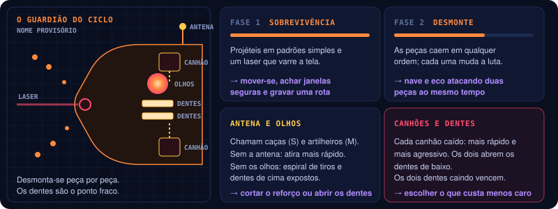
| Fase | O que acontece | O jogador aprende |
|---|---|---|
| 1 · Sobrevivência | Projéteis em padrões simples; um laser varre a tela | Mover-se, achar janelas seguras e gravar uma rota |
| 2 · Preparação | Dois geradores laterais protegem o núcleo | Gravar tiros contra um gerador e atacar o outro enquanto o eco repete |
| 3 · Sincronização | Os dois geradores precisam cair numa janela curta; aí o núcleo fica vulnerável | Coordenar os disparos da nave com os do eco, vivo durante o padrão de projéteis |
| 4 · Última chance | Com pouca vida, mais ataques e janelas de vulnerabilidade menores | Aproveitar os ecos já criados para fechar o combate |
No protótipo atual
Uma versão mínima com as fases 1 a 3 (prefab Guardian, regras em GuardianModel). A fase 4 não existe. O Guardião entra pela direita em 2,5 s, com a tela parada, e luta na borda direita, ocupando a metade direita da tela. Depois da entrada, deriva 0,8 u na vertical (0,18 Hz) e 0,25 u na horizontal: as partes fracas continuam legíveis, mas deixam de ser alvos totalmente estáticos.
Ele usa o modelo de blockout do designer (Enemie_Boss_BlockOut), visto de lado, como as naves e os inimigos: virado para a nave, com o topo inclinado 25° para a câmera e o rosto virado 15° para ela. A cabeça, com o visor vermelho, fica no alto; os dois braços-canhão apontam para a nave em alturas diferentes (o de trás aparece mais alto e um pouco mais à frente); o corpo desce numa cauda. Em 2026-10-18 o designer pediu essa vista, a mesma das naves, e mandou o modelo em tamanho menor.
| Peça do modelo | No combate |
|---|---|
| Ponta de cada canhão | Um gerador (losango laranja): o de cima (canhão de trás) e o de baixo (canhão da frente) |
| Visor | O núcleo, no alto, acima dos canhões |
| Boca | De onde saem os tiros das fases |
| Corpo e canhões | Blindagem |
Para tudo bater com o que aparece na tela, os colisores ficam no plano de jogo, na posição em que cada peça é vista pela câmera; o modelo fica logo atrás desse plano. A blindagem é feita de faixas que seguem o contorno do corpo e dos canhões. Os geradores ficam 1,7 u um acima do outro, e o núcleo 3 u acima do centro do Guardião.
| Parte | Como funciona |
|---|---|
| Blindagem (corpo e canhões) | Absorve todos os tiros e fere a nave que encostar nela |
| Núcleo | 120 de vida. Absorve os tiros enquanto o escudo âmbar está à vista; só toma dano quando fica vulnerável |
| Geradores (cima e baixo) | 12 de vida cada. Derrubar o primeiro abre uma janela; se o segundo cai dentro dela, o núcleo fica vulnerável por 4 s. Se a janela fecha com um gerador de pé, o que caiu volta com a vida cheia |
| Volta dos geradores | Quando a vulnerabilidade acaba, os dois geradores voltam com a vida cheia |
| Fase | No protótipo |
|---|---|
| 1 · Sobrevivência | 10 s com tudo blindado. Leque de 7 tiros mirados na nave a cada 1,1 s. O laser varre de uma borda até perto do meio da tela, alternando a metade de cima e a de baixo: aviso de 0,9 s, varredura de 2,2 s, pausa de 1,15 s |
| 2 · Preparação | Geradores expostos, janela generosa de 5 s. Rajada de 5 tiros mirados a cada 1 s. A primeira vez que o núcleo fica vulnerável encerra a fase: quando a vulnerabilidade acaba, começa a fase 3 |
| 3 · Sincronização | A mesma regra com janela curta de 2,5 s. Um anel de 18 tiros a cada 1,1 s, que gira um pouco a cada anel. Repete até o núcleo cair |
O núcleo destruído derrota o Guardião, e essa é a vitória do encontro. Pontuação: 250 por gerador derrubado e 5000 pelo núcleo. O HUD mostra a vida do núcleo, os dois geradores, a fase, a janela e o tempo de vulnerabilidade → 07.
Combos no Guardião → 03:
| Combo | No Guardião |
|---|---|
| Synchronized Strike | Um gerador cai pela nave e o outro por um eco, com até 2,5 s entre as quedas, e o núcleo abre. O escudo cai pela regra de sempre; o combo dá o aviso "SYNCHRONIZED STRIKE" no HUD e 1000 pontos. Na fase 3 a janela do Guardião também é de 2,5 s, então toda abertura feita com nave e eco conta; na fase 2 (janela de 5 s) as quedas precisam estar mais próximas |
| Crossfire | A nave e um eco acertando o mesmo gerador, ou o núcleo vulnerável, com até 1 s de diferença: +3 de dano combinado |
Derrubar os dois geradores só com a nave ainda abre o núcleo, mas não é Synchronized Strike.
Todos os números são valores de partida para testar, no prefab Guardian.
Por quê: a janela é o que pede o eco. Grave os tiros contra um gerador (a fase 1, com tudo blindado, é um bom momento) e invoque o eco quando os geradores abrirem, atacando o outro com a nave.
Estrutura das runs
| Encontro | Conteúdo | Objetivo de design |
|---|---|---|
| 1 · Primeiro ciclo | Inimigos simples → 04 | Ensinar movimento, tiro e gravação |
| 2 · Combinação | Inimigos e gadget | Ensinar combos temporais |
| 3 · Guardião | O chefe | Testar o domínio da mecânica |
No protótipo, os encontros podem ser segmentos de uma única fase, sem mapa de progressão.
No protótipo atual, a cena Arena_01 encadeia dois encontros (StageDirector):
| Ordem | Encontro | Começa quando | Termina quando |
|---|---|---|---|
| 1 | Primeiro ciclo — ondas → 04 | A cena carrega | 2,5 s depois da última onda, sem inimigo vivo na tela |
| 2 | Guardião | 2 s depois do fim das ondas (bossDelaySeconds, valor de partida); a rolagem para | O núcleo é destruído: vitória |
O encontro de Combinação (inimigos e gadget) ainda não existe. O StageDirector tem um campo startAt para começar direto no Guardião ao testar.
Progressão entre tentativas
A repetição deve reforçar o tema One More Time. Dois modelos estão em jogo:
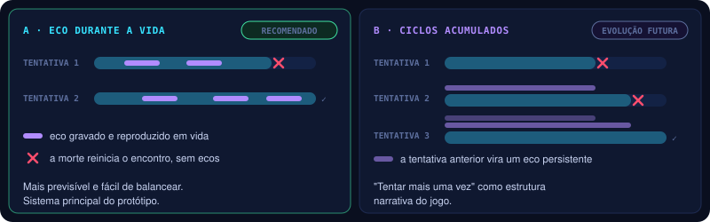
No protótipo atual o modelo A está implementado: ao morrer, a cena recarrega depois de 2 s no encontro em que a morte aconteceu (ondas ou Guardião), sem ecos e com a pontuação zerada (RunCheckpoint). Derrotar o Guardião é a vitória.
Por quê: o modelo A é mais previsível e mais fácil de balancear. O modelo B pode entrar depois, se "tentar mais uma vez" também virar a estrutura narrativa do jogo.
- O chefe tem quatro fases (§9) ou duas (tabela do §10, "chefe com duas fases de combate")? O protótipo tem as fases 1 a 3; a fase 4, Última chance, não está implementada.
- Nome definitivo do chefe — "O Guardião do Ciclo" é provisório.
- Confirmar o modelo A como sistema do protótipo (é o que está implementado).
- O Guardião do Ciclo: versão mínima implementada (fases 1 a 3).
- Na fase 2 o núcleo também fica vulnerável quando os dois geradores caem; o v0.1 só fala de núcleo exposto na fase 3. Manter assim?
- Os geradores não recuperam vida enquanto estão de pé, então dá para enfraquecer os dois e derrubá-los em sequência dentro da janela curta sem o eco. Isso é aceitável, ou os geradores devem se regenerar? (Outra saída: só o Synchronized Strike abrir o núcleo → 03.)
- O Guardião entrando fere a nave que estiver no caminho (dano de contato da blindagem). É justo, ou a blindagem só fere depois que ele para?
- Movimento do Guardião: deriva curta vertical e horizontal implementada, mantendo os pontos fracos dentro de uma faixa legível.
- O designer também sugeriu um chefe grande o bastante para não caber na tela, com a peça grande dividida em partes. Hoje ele cabe na tela, e as partes são só os dois geradores e o núcleo.
07Controles e interface
Fonte: GDD v0.1 (PDF) §11; protótipo em Assets/_Project/Input e Assets/_Project/UI · docs/gdd/07-controles-e-interface.md
Como o jogador pilota, grava e invoca ecos sem parar de desviar — e o que o HUD precisa mostrar.
Controles propostos
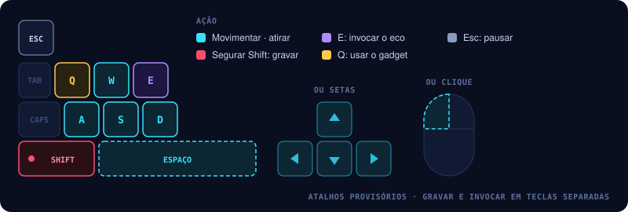
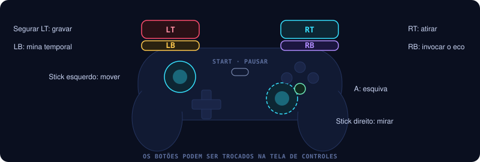
| Ação | Teclado e mouse | Controle |
|---|---|---|
| Movimentar nave | W A S D ou setas | Stick esquerdo |
| Mirar | Mover o mouse; a linha e o retículo ciano mostram a direção do próximo tiro | Stick direito (solto, a nave mantém a última mira) |
| Disparo principal | Espaço ou botão esquerdo do mouse | RT |
| Gravar sequência | Segurar Shift | Segurar LT |
| Invocar eco | E | RB |
| Usar gadget | Q | LB |
| Pausar | Esc | Start |
Por quê: os atalhos são provisórios, e o jogador pode trocá-los na tela de controles (abaixo). O que importa é separar a gravação da reprodução, para o jogador não invocar o eco sem querer enquanto tenta desviar dos tiros.
No protótipo, estas ações estão em Assets/_Project/Input/OneMoreTimeControls.inputactions (mapa Gameplay), lidas só pelo PlayerInputReader. A ação Aim lê a posição do ponteiro e o ShipAim a projeta no plano de jogo; o movimento continua independente da mira. Com um controle, a ação AimStick (stick direito) dá a direção da mira. O leitor sabe qual dispositivo o jogador usou por último (UsingGamepad): é ele que decide se a mira vem do mouse ou do stick e quais dicas aparecem no HUD. Q solta a mina temporal → 05.
HUD
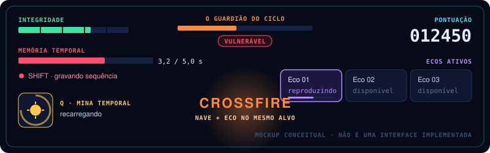
O HUD do protótipo (UI Toolkit: Hud.uxml e Hud.uss) já mostra integridade, memória temporal com o tempo gravado, os três espaços de eco, a pontuação, o gadget com a recarga ("Q · pronta" ou "recarga 1,2 s") e as mensagens de pausa, derrota ("TENTE NOVAMENTE", e o encontro recomeça) e vitória ("GUARDIÃO DERROTADO", com pontuação, abates e combos). Com o Guardião em cena, um painel no topo mostra a vida do núcleo, os dois geradores, a fase e o estado do núcleo: blindado, protegido pelos geradores, a janela aberta quando um gerador cai, ou vulnerável com o tempo que resta.
A linha de dicas no pé da tela mostra os controles do dispositivo usado por último (teclado ou controle), com as teclas como estão agora.
O aviso de combo aparece no alto da tela, no centro, por 1,4 s, como no mockup: o nome do combo e o que o causou, com os pontos → 03.
| Combo | Aviso |
|---|---|
| Crossfire | "CROSSFIRE" · "NAVE + ECO NO MESMO ALVO · +100" |
| Synchronized Strike | "SYNCHRONIZED STRIKE" · "NAVE + ECO NOS GERADORES · ESCUDO DESATIVADO · +1000" |
O mesmo combo de novo enquanto o aviso está na tela conta "×2", "×3"; um Crossfire não cobre um Synchronized Strike que ainda está à vista. A duração fica em HUD → HudController.
| Elemento | Por que o jogador precisa |
|---|---|
| Vida restante (integridade) | Saber quanto risco ainda pode correr |
| Gravação (memória temporal) | Planejar a sequência sem olhar o relógio |
| Ecos ativos | Saber o que já está trabalhando por ele |
| Gadget e recarga | Saber quando pode usar de novo |
| Vida do chefe e vulnerabilidade | Saber quando atacar |
| Feedback de combo | Entender o que funcionou → 03 |
Telas do jogo
O jogo abre no menu e só depois vai para a arena. O estilo é inspirado nos menus de Star Fox 64: fundo preto com estrelas, barras de aço com texto azul-escuro, um mapa de missões e uma história que sobe pela tela. A nave Bilu aparece em 3D atrás do título e do menu.
| Tela | O que tem | Como sai |
|---|---|---|
| Título | "BILU'S INVASION", "O PASSADO CONTINUA LUTANDO" e "PRESSIONE ENTER / START" piscando; música do título | Qualquer tecla, botão do controle ou clique: menu principal |
| Menu principal | JOGO PRINCIPAL · CONTROLES · SOM · CRÉDITOS · SAIR | Esc volta ao título |
| Som | Barras de MÚSICA e EFEITOS de 0 a 10, salvas entre partidas; o ajuste vale na hora | Esc ou Enter volta |
| Controles | Uma linha por ação, com uma célula para o teclado e outra para o controle; Enter (ou A) numa célula espera a nova tecla ou botão, Esc cancela. "RESTAURAR PADRÃO" volta tudo ao original | Esc volta |
| Créditos | Os créditos de áudio (tudo CC0). A equipe é _TBD_ | Esc volta |
| Mapa de missões | Sete casas ligadas por uma linha; só a primeira (Missão Nº 1) existe, as outras são "?" bloqueadas e respondem com um som de negação | Enter abre a história; Esc volta |
| História | Imagem pequena no alto e o texto da missão subindo, com música de abertura | Enter pula, ↓ acelera, Esc volta; no fim, a arena |
| Cartão de missão | Na arena, tela preta com "MISSÃO Nº 1", o local e o nome da missão, por cerca de 3 s; a fase só começa quando ele some | Sozinho. Não volta depois de uma morte |
Teclas do menu: ↑ ↓ ← → ou W A S D movem (repetem se a tecla ficar apertada), Enter ou Espaço confirmam, Esc ou Backspace voltam. No controle: D-pad ou stick esquerdo movem, A ou Start confirmam, B volta. O mouse também funciona: passar sobre uma barra a seleciona e clicar confirma.
A ordem das telas, o cursor, a rolagem do texto e os volumes são regras do Core, com testes (ScreenFlow, MenuCursor, CrawlScroll, SoundLevels). Os textos ficam em dois assets, para editar sem mexer em código: Data/Menu/MenuTexts (as palavras de todas as telas) e Data/Missions/Mission_01 (MissionData: número, local, nome, texto da história, imagem e cena). O layout e o visual ficam em UI/Menu.uxml, Menu.uss, MissionCard.uxml e MissionCard.uss.
O texto da história é o do dono: em outubro de 2010 Bilu trouxe à Terra a mensagem "busquem conhecimento"; 42 anos depois, com a Terra seca e saqueada por um império decadente, ele volta para entregá-la mais uma vez, à força. O texto fecha no tema do design: "Uma vez não bastou. Então, mais uma vez: BUSQUEM CONHECIMENTO!!!!".
Trocar os controles
Na tela de controles, o jogador troca a tecla de cada ação (e o botão do controle). Valem as regras:
- Só o que faz sentido trocar. As quatro direções (a primeira composição, WASD), atirar, gravar, invocar, mina e pausar. A mira (mouse e stick direito) e o movimento do controle (stick esquerdo) são fixos, e aparecem apagados. As setas e o clique esquerdo continuam valendo como segunda opção.
- Nenhum botão faz duas coisas. Se o jogador escolhe uma tecla que já era de outra ação, as duas trocam de lugar.
- Ficam salvos entre partidas (
ControlsStore, emPlayerPrefs), e o jogo e o menu leem as mesmas teclas. A dica no pé do HUD acompanha. - Esc (teclado) e Start (controle) cancelam a escolha; por isso não dá para trocar uma ação para esses botões pela tela, só voltando ao padrão.
As linhas da tela, os nomes dos botões em português e a regra de conflito são do Core, com testes (ControlLayout, BindingLabels, BindingConflicts); ControlsCatalog e ControlsStore ficam em Gameplay/Input.
- Remapear também o movimento do controle e a mira (mouse e stick): hoje são fixos.
- Mapeamento definitivo das teclas no Input System.
- Fonte pixelada para os menus e o HUD: o protótipo usa a fonte padrão do Unity.
- Tela de título definitiva: o protótipo mostra a nave de blockout.
- O aviso de combo usa laranja, como o mockup; laranja também é a cor de perigo → 08. Fica assim, ou o combo ganha uma cor própria?
08Direção visual e sonora
Fonte: GDD v0.1 (PDF) §12; protótipo em Assets/_Project (cena Arena_01, modelos em Art/Ships) · docs/gdd/08-direcao-visual-e-sonora.md
Como o jogo se parece e soa, com uma regra: a tela e o som têm que explicar a mecânica temporal.
Paleta, assets e pipeline de arte ficam na bíblia de arte.
Direção visual
Estética de arcade sci-fi: silhuetas legíveis, efeitos de energia e contrastes fortes.
2.5D: mundo 3D, leitura 2D
O jogo é um side-scrolling 2.5D: o mundo e a jogabilidade são 3D, vistos por uma câmera lateral que lê como 2D. Alguns elementos serão sprites 2D, misturados ao mundo 3D.
Por quê: a leitura lateral mantém o bullet hell legível, e o 3D dá profundidade, luz e efeitos de energia.
No protótipo atual: câmera em perspectiva (campo de visão 40°, a 20 unidades do plano de jogo), a jogabilidade num plano em z = 0 e cenário 3D atrás dele, com névoa para dar profundidade.
Naves e chefe usam os modelos 3D de blockout do designer, em Art/Ships (do arquivo BI_Ships.blend):
| Modelo | Quem usa | Como aparece |
|---|---|---|
Bilu_BlockOut | Nave e eco | Virado para a direita, topo do disco inclinado 15° para a câmera; ciano na nave, violeta translúcido no eco |
Enemie_S_1_BlockOut, Enemie_S_BlockOut, Enemie_S_3_BlockOut | Caça (S) | Três variações, uma sorteada por caça; viradas para a nave, com a mesma inclinação; laranja |
Enemie_M_1_BlockOut, Enemie_M_2_BlockOut, Enemie_M_3_BlockOut | Artilheiro (M) | Três variações, sorteadas do mesmo jeito; vermelho |
Enemie_Boss_BlockOut | Guardião do Ciclo | Visto de lado, virado para a nave, topo inclinado 25° e rosto 15° para a câmera; casco azul-escuro, visor vermelho → 06 |
As variações misturam peças entre os inimigos e mudam a cabeça. No caça: só a cabine (S_1), a cabine com dois canhões longos (S, a primeira exportação; não há um S_2) e a cabine com garras (S_3). No artilheiro: só a cabeça (M_1), a cabeça com garras (M_2) e a cabeça com os canhões do caça (M_3) → 04.
Ao subir ou descer, nave, eco e inimigos inclinam até 25°: o topo vira para a câmera quando sobem e se afasta quando descem.
Inimigos e chefe seguem a regra de cor: laranja e vermelho são perigo. O resto — tiros e cenário — ainda é placeholder feito de primitivas, até a arte chegar.
Visual pixelado
O mundo 3D é desenhado numa altura baixa fixa e ampliado sem suavizar, então cada pixel vira um bloco visível — o visual do Star Fox do SNES, a referência pedida pelo time em 2026-10-18. O HUD é desenhado depois, em resolução cheia, e fica nítido.
| No protótipo | |
|---|---|
| Altura do mundo | 270 px (o Star Fox usa 224), arredondada para cada pixel ocupar um número inteiro de pixels da tela: em 1080p, blocos de 4 × 4 |
| Onde mudar | Componente PixelView em Systems (cena Arena_01), campo Target Height: menor deixa mais pixelado. Dá para mexer durante o Play mode |
| Desligar | Desmarcar o componente PixelView |
Valor de partida, para testar.
Cor
Contorno nítido e disparos bem visíveis.
Contorno luminoso e um rastro que sugere repetição; distinguível mesmo com muitos projéteis.
Sinal visual claro antes de cada ataque.
Por quê: com até três ecos e padrões de bullet hell, a cor é o que diz ao jogador quem ele é, quem é o passado dele e o que o machuca.
Feedback de combate no protótipo
O feedback segue uma hierarquia para preservar a leitura do bullet hell:
| Evento | Resposta implementada |
|---|---|
| Acerto comum | Flash branco curto no alvo, poucas faíscas na cor da origem e microimpulso de câmera |
| Tiro bloqueado | Faíscas da origem e anel azul de deflexão; não dispara efeito de dano |
| Dano na nave | Flash vermelho, faíscas ciano, anel de alerta e shake mais claro com pequeno pulso de lente |
| Inimigo destruído | Explosão de partículas e anel expansivo que persistem depois que o inimigo some |
| Artilheiro, gerador ou núcleo destruído | Mesma composição em escala, densidade e shake progressivamente maiores |
| Combo temporal | Convergência Temporal: faíscas violetas e dois anéis ciano/violeta no ponto do combo |
CameraImpact usa trauma com limite de deslocamento e retorno rápido. Hits comuns não acumulam um tremor constante; dano do jogador, inimigos resistentes, partes do chefe e o núcleo recebem pesos diferentes. CombatVfxPool reaproveita sistemas de partículas e anéis, evitando criar e destruir objetos a cada tiro.
Direção sonora
| Momento | Som |
|---|---|
| Gravação | Pulso eletrônico que aumenta de frequência |
| Invocação do eco | Som de reversão seguido de um impacto digital |
| Reprodução | Versão filtrada dos sons da nave original |
| Combo temporal | Efeito sonoro exclusivo e curto |
| Chefe vulnerável | Mudança musical ou sinal sonoro marcante |
No protótipo atual o som já toca. O AudioDirector escuta os mesmos eventos de dano, morte, combo, eco e chefe que o feedback de combate, e pede cada cue (SoundCue: "tiro da nave", "inimigo grande morreu"…) ao SfxPlayer, que escolhe o clipe no AudioLibrary (asset em Data/). Trocar um som é trocar o clipe no asset, sem tocar no código. Efeitos repetidos têm limite de vozes e intervalo mínimo (CueThrottle), para o bullet hell não virar ruído, e panoramizam pela posição na tela. Os valores são de partida, escolhidos pelo nome dos arquivos, e precisam de ajuste de ouvido.
| Momento | O que toca |
|---|---|
| Tiro da nave | Shoot 2 ou 3 do pack Deva |
| Tiro do eco | Os mesmos, mais graves e abafados (filtro passa-baixa em 1800 Hz) |
| Tiro de inimigo e do chefe | Lasers retrô da Kenney |
| Acerto, escudo | Hit do Deva; impacto metálico da Kenney |
| Dano na nave | Ouch do Mini pack |
| Inimigo, gerador, núcleo e nave destruídos | Explosões em escala crescente (Deva e Kenney) |
| Mina solta e detonada | Powerup do Deva; explosão grave da Kenney |
| Gravando (Shift) | Pulso gerado em código (onda quadrada) que acelera e sobe de tom até os 5 s; bipe ao começar e ao parar |
| Invocação do eco (E) | Loop de reversão de tempo cortado em 0,7 s, depois um impacto 0,55 s mais tarde |
| Combo temporal | Starpower do Mini pack, curto |
| Chefe vulnerável, nova fase | Campo de força da Kenney; rugido do Mini pack |
| Pausa e vitória | Bipes e jingles curtos (Pickup, Powerup, menu, Win Jingle) |
| Menus e cartão de missão | Os dois bipes de menu, um som de negação (Wrong) e um campo de força curto no cartão |
A música muda a cada tela e a cada encontro. O título e o menu tocam Venus, do NES Shooter Music; o mapa de missões, Map; a história, Stage 1, de Juhani Junkala, uma faixa provisória de aventura (o time pediu o clima de abertura do Overground, de Shovel Knight Dig, que tem direitos autorais e não pode ser usado). Nas fases, as ondas tocam 8-bit Epic Space Shooter e o Guardião a faixa Boss do NES Shooter Music (intro e loop). A música abaixa na pausa e some na vitória e na derrota. Qual faixa vai em cada lugar é uma escolha pelo nome dos arquivos: falta ouvir e ajustar no AudioLibrary. O controle de MÚSICA e EFEITOS da tela de som (07) multiplica o volume de tudo.
Ainda sem som: o laser giratório do Guardião e a fase 4 do chefe (que não existe). O pulso de interferência também não existe ainda.
Os clipes ficam em Assets/_Project/Audio. Todos são CC0, do OpenGameArt (fontes e licenças em Audio/CREDITS.md):
| Pasta | Conteúdo |
|---|---|
SFX/Mini8bit | 210 efeitos retrô em OGG: tiro (Pew), explosões, dano (Ouch), Space, Teleport, Powerup, Pickup, Menu e outros |
SFX/Deva8bit | 46 efeitos retrô em WAV: tiro, explosões, impactos, power-ups, erros |
SFX/KenneySciFi | 73 efeitos sci-fi em OGG: lasers, explosões, motores, campo de força |
SFX/Time | Loop de reversão de tempo, candidato à invocação do eco |
UI | Dois bipes de menu (seleção e destaque) |
Music | Quatro faixas chiptune em loop de Juhani Junkala: Stage 1, Stage 2, Boss Fight e Stage Select |
Music/NesShooter | NES Shooter Music: cinco faixas (Venus, Map, Mars, Mercury, Boss, esta com intro), quatro jingles e os projetos FamiTracker. É a candidata à tela de título |
Music/Pulsar, EpicSpaceShooter, RushPoint, OnAgainOffAgain | Quatro faixas mais animadas, em estilo NES, candidatas aos stages (de 27 s a 164 s) |
- Quem é dono da arte e do áudio?
- Referências visuais: Cuphead (câmera) e Star Fox do SNES (visual pixelado); outras _TBD_.
- O HUD fica nítido, como hoje, ou também pixelado, como no Star Fox?
- Quais elementos são modelos 3D e quais são sprites 2D: _TBD_ (naves e chefe já são modelos 3D).
- A câmera lateral é fixa e ortográfica, ou tem alguma perspectiva? O protótipo usa perspectiva; falta confirmar.
- O designer sugeriu uma lente de 300 mm: campo de visão bem estreito, com a câmera muito mais longe, o que deixa a perspectiva quase plana. O protótipo usa 40° a 20 u; falta testar e decidir.
09Arquitetura técnica
Fonte: GDD v0.1 (PDF) §13; código em Assets/_Project/Scripts · docs/gdd/09-arquitetura-tecnica.md
A arquitetura sugerida para Unity: quem grava, quem reproduz, e como o eco conversa com os outros sistemas.
A implementação é modular: o sistema temporal não depende diretamente da lógica de cada inimigo.
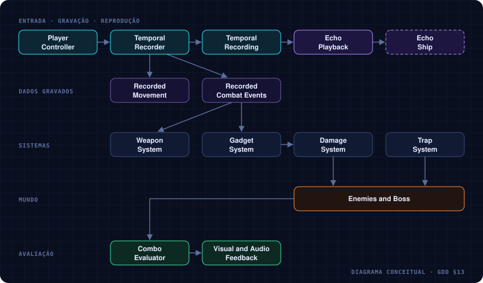
Componentes principais
| Componente | Responsabilidade |
|---|---|
PlayerController | Movimento e entrada do jogador |
TemporalRecorder | Captura as amostras e os eventos |
TemporalRecording | Armazena a sequência gravada |
EchoPlayback | Reproduz a sequência em ordem temporal |
WeaponSystem | Gerencia disparos e projéteis |
GadgetSystem | Ativa e registra gadgets |
EnemyController | Movimento e comportamento dos inimigos |
BossController | Fases, ataques e pontos fracos |
ComboEvaluator | Detecta as condições dos combos temporais |
Implementação atual
O código fica em Assets/_Project/Scripts, em quatro assemblies; os testes em Assets/_Project/Tests/EditMode.
| Assembly | Conteúdo |
|---|---|
OneMoreTime.Core | Regras em C# puro, testáveis sem cena: gravação, reprodução, vida e escudo, linha do tempo das ondas, ciclo do laser do Guardião, recarga e pavio da mina, fases do Guardião, combos temporais, caminhos e tiro dos inimigos |
OneMoreTime.Gameplay | Componentes da cena: input, playfield, nave, tiro, gadget, inimigos, ondas, chefe, encontros, combos e sessão |
OneMoreTime.UI | O HUD |
OneMoreTime.Editor | A ferramenta que monta o conteúdo placeholder (menu One More Time › Bootstrap) |
| Sugerido no GDD | No protótipo | Nota |
|---|---|---|
PlayerController | PlayerInputReader + ShipMotor + ShipAim | Input separado do movimento; ShipAim projeta o ponteiro no plano (ou segue o stick direito, quando o último dispositivo foi o controle), orienta apenas o visual e desenha o indicador |
TemporalRecorder | EchoRecorder (Core) + EchoAbility | EchoAbility liga input, nave e arma ao gravador |
TemporalRecording | EchoRecording (Core) | |
EchoPlayback | EchoPlayback (Core) + EchoGhost | EchoGhost é a nave fantasma na cena |
WeaponSystem | ShipWeapon + Projectile + ProjectilePool | Tiros reaproveitados por pool |
DamageSystem | Health (+ HealthModel) + ContactDamage | Health publica dano aceito, bloqueio por escudo e morte; invulnerabilidade repetida fica silenciosa para não gerar spam visual |
EnemyController | Enemy + EnemyGun + ModelVariants + WaveSpawner + WaveSchedule (+ SwoopMotion, HoverMotion, FireCycle no Core) | Ondas são um asset de dados; o caminho e o tiro de cada inimigo vêm do prefab (Enemy_S, Enemy_M). O WaveSpawner passa a nave e o pool de tiros aos inimigos. ModelVariants sorteia o modelo ao surgir e ajusta a hitbox e a boca do tiro a ele |
GadgetSystem | ShipGadget + TimeMine (+ Cooldown, TimeMineModel no Core) | A nave solta a mina; o eco reproduz o evento Gadget |
BossController | GuardianBoss + SweepLaser (+ GuardianModel no Core) | Fases, escudos, geradores e padrões de tiro |
ComboEvaluator | ComboTracker (+ CrossfireRule, SynchronizedStrikeRule no Core) | Uma regra por combo; só Crossfire e Synchronized Strike existem. O ComboTracker ouve o Health.Damaged dos inimigos que as ondas criam e das partes do Guardião, e o GeneratorDestroyed do Guardião; aplica o bônus e avisa o HUD e a sessão (Triggered) |
| — | Playfield | O quadro que rola, com a câmera, a nave e os ecos |
| — | PixelView | O visual pixelado: enquanto está ligado, muda a escala de render e o filtro (Point) do asset do URP; devolve os dois ao desligar → 08 |
| — | StageDirector + RunCheckpoint | Encadeia os encontros (ondas → Guardião, com 2 s de respiro) e guarda em qual recomeçar depois de uma morte |
| — | GameSession | Pontuação (inimigos, Guardião e combos), pausa, vitória (o Guardião cai) e derrota |
ControlsSystem | ControlsCatalog + ControlsStore (+ ControlLayout, BindingLabels, BindingConflicts no Core) | Os controles que o jogador pode trocar. O Core diz quais linhas existem, como se escreve cada botão e quando dois conflitam; o ControlsCatalog acha o binding certo no mapa Gameplay e diz o que está ligado agora; o ControlsStore guarda as trocas (overrides do Input System) em PlayerPrefs, e os dois leitores de input as aplicam ao acordar → 07 |
MenuSystem | MenuController + MenuInputReader + StarfieldView + ShowcaseSpin (+ ScreenFlow, MenuCursor, CrawlScroll, SoundLevels no Core) | A cena Menu (índice 0 do build). A ordem das telas, o cursor, a rolagem da história e os volumes são regras do Core; o MenuController desenha as telas em UI Toolkit (Menu.uxml), toca os sons e carrega a fase. O MenuInputReader lê o mapa Menu do mesmo asset de input → 07 |
MissionSystem | MissionData + MenuTexts + MissionSelection + MissionCardController + StageGate | Os textos são ScriptableObjects. A missão escolhida no mapa chega à arena por MissionSelection; o cartão de missão é um StageGate: o StageDirector espera ele abrir antes do primeiro encontro, e o cartão não volta depois de uma morte (RunCheckpoint.HasSaved) |
AudioSystem | AudioDirector + SfxPlayer + MusicPlayer + AudioLibrary (+ SoundCue, CueThrottle, RecordPulse, VolumeFader no Core) | O AudioDirector traduz eventos de tiro, dano, morte, eco, combo, chefe e pausa em cues; tiros e minas chegam por ProjectilePool.CueRaised. O SfxPlayer toca numa reserva fixa de AudioSource (escolhe clipe, tom, pan e abafamento) e o MusicPlayer encadeia intro e loop por encontro. Os clipes de cada cue ficam no AudioLibrary (asset em Data/); o menu One More Time › Bootstrap › Build Audio cria o asset e liga o áudio na cena → 08 |
| — | CombatFeedbackDirector + CombatVfxPool + CameraImpact | Traduz eventos de dano, escudo, morte e combo em flashes, VFX reutilizados e impulsos proporcionais de câmera; não altera vida, dano ou colisão |
Os tiros e o laser do chefe usam a layer EnemyProjectile, que só colide com a nave. A mina não tem colisor: o alcance e a explosão são consultas de física (CheckSphere, OverlapSphere) na layer Enemy.
Os combos sabem quem acertou pelo DamageInfo.Source (Ship ou Echo) de cada dano. O bônus do Crossfire é dano Combined, que o próprio ComboTracker ignora, para não realimentar a regra. O Health decide se o acerto matou antes de avisar Damaged: um ouvinte que cause mais dano nesse aviso (o bônus) não faz o Died disparar duas vezes.
O feedback de combate acompanha os alvos dinâmicos pelo EnemySpawned/EnemyRemoved do WaveSpawner e as partes do chefe quando o StageDirector cria o Guardião. Partículas e anéis pertencem a um pool em Systems, então continuam visíveis mesmo quando o alvo morto é destruído no mesmo frame.
Como armazenar a gravação
Uma amostra de movimento:
public struct EchoSample
{
public float time;
public Vector2 position;
public float rotation;
public Vector2 aimDirection;
}Disparos e gadgets ficam numa lista separada de eventos, cada um com seu instante relativo à gravação:
public struct EchoEvent
{
public float time;
public EchoEventType type;
public Vector2 position;
public Vector2 direction;
}EchoEventType é um enum com os tipos de evento que o protótipo suporta, como disparo e uso de gadget.
| Taxa de amostragem | Fixa, não a cada frame — 20 amostras por segundo costuma bastar para começar |
|---|---|
| Pose entre amostras | A reprodução interpola posição, inclinação e direção da mira pelo menor arco |
| Eventos | Respeitam o instante original e disparam uma única vez |
| Relógio | A reprodução usa o tempo decorrido do próprio eco |
| Projéteis do eco | Nascem no ponto e na direção registrados; as colisões são avaliadas no estado atual do mundo |
Por quê: gravar dados, e não o mundo, é o que mantém a regra fundamental barata de implementar.
- Lista final de valores de
EchoEventType. O protótipo usaShoteGadget. - ✓ Resolvido:
EchoSampleeEchoEventcontinuam comVector2, porque a nave se move só no plano de jogo e as posições são relativas ao playfield. → 02
10Produção — escopo da jam
Fonte: GDD v0.1 (PDF) §14, §15 e §16; estado do protótipo em 2026-10-17 (gadget, chefe e os dois primeiros combos) · docs/gdd/10-producao.md
O que entra na jam, o que fica de fora, quando o protótipo está pronto para teste e o que pode dar errado.
O objetivo é validar se a mecânica central é divertida, não construir todo o conteúdo previsto para o jogo final.
Escopo
Obrigatório — MVP
- Nave com movimento e disparo
- Uma arena side-scrolling 2.5D
- Gravação de cinco segundos
- Reprodução de movimento e disparos
- Pelo menos um tipo de inimigo (drone), com ondas por script
- Um gadget funcional
- Um chefe com uma janela de vulnerabilidade temporal
- Interface mínima e condição de vitória e derrota
Opcional — depois do MVP
- Até três ecos simultâneos
- Um combo temporal com feedback próprio
- Um segundo gadget
- Pontuação por combos e esquivas
Fora do escopo inicial
- Rebobinar o mundo inteiro
- Campanha extensa
- Vários chefes
- Progressão roguelite complexa
- Árvore de habilidades
- Muitos gadgets com sistemas de física independentes
Estado do MVP
| Item do MVP | Estado |
|---|---|
| Nave com movimento e disparo | feito |
| Uma arena side-scrolling 2.5D | feito cena Arena_01 (a cena Menu vem antes no build); naves e chefe com os modelos de blockout, o resto em placeholder |
| Gravação de cinco segundos | feito |
| Reprodução de movimento e disparos | feito |
| Inimigos com ondas por script | feito caça (S) e artilheiro (M), que atiram → 04 |
| Um gadget funcional | feito mina temporal, na tecla Q, reproduzida pelo eco → 05 |
| Um chefe com janela de vulnerabilidade temporal | feito Guardião do Ciclo, fases 1 a 3 → 06 |
| Interface mínima e condição de vitória e derrota | feito vitória = derrotar o Guardião; derrota recomeça o encontro atual |
| Suporte a controle e remapeamento | feito gamepad no jogo e no menu; o jogador troca teclas e botões na tela de controles → 07 |
| Fluxo de telas | feito título, menu, som, controles, créditos, mapa de missões, história e cartão de missão, na cena Menu → 07 |
Dos opcionais, já entraram dois combos temporais com aviso no HUD (Crossfire e Synchronized Strike) e a pontuação por combos → 03, e o áudio: efeitos e música CC0 ligados ao jogo → 08.
Critérios de aceitação do protótipo
O protótipo está pronto para teste quando:
- O jogador grava e reproduz uma sequência de cinco segundos.
- O eco repete movimentos e disparos sem depender do controle atual.
- A reprodução continua funcionando quando os inimigos se movem ou morrem.
- Um gadget pode ser usado por uma ação registrada. (O eco solta a mina temporal no mesmo ponto e instante da gravação.)
- O jogador combina o eco com a nave atual para criar pelo menos um ataque especial. (Crossfire: nave e eco no mesmo alvo dão dano combinado. Synchronized Strike: um gerador do Guardião pela nave e o outro pelo eco derrubam o escudo do núcleo. Os dois têm aviso no HUD → 03.)
- O chefe pode ser derrotado usando a mecânica temporal. (O eco derruba um gerador enquanto a nave derruba o outro.)
- O jogador entende visualmente qual nave é a atual e qual é o eco. (Com o modelo de blockout, a nave ciano e o eco violeta translúcido já se distinguem; falta testar com jogadores.)
- A mecânica continua legível nos momentos com mais projéteis.
Riscos de design e mitigação
| Risco | Mitigação |
|---|---|
| O jogador não entende para que serve o eco | Um encontro inicial em que a solução exige claramente duas ações simultâneas |
| Os ecos deixam a tela confusa | Limitar a quantidade, reduzir a opacidade e distinguir os efeitos visuais |
| A gravação exige precisão excessiva | Janelas de sincronização generosas no começo |
| Os combos viram só bônus de dano | Interações com escudos e pontos fracos |
| O sistema fica complexo de implementar | Reproduzir só dados e eventos do jogador, sem rebobinar a cena |
| O chefe parece injusto | Sinalizar os ataques, as janelas de vulnerabilidade e o resultado de cada combo |
- Data e regras da game jam: _TBD_.
- Os critérios 4, 5 e 6 foram verificados pelo Unity CLI, não com jogadores. Falta o teste sem explicação.
- Equipe e quem faz o quê: _TBD_.